###### Apps: 1.0 and beyond “Programming is about managing complexity: the complexity of the problem, laid upon the complexity of the machine. Because of this complexity, most of our programming projects fail.” -Bruce Eckel “Thus, you should not think of “working code” as your primary goal, though of course your code must work. Your primary goal must be to produce a great design, which also happens to work. This is strategic programming.” - John Ousterhout Jukka Nikki, Programmer since 6502
#### Modern Applications - Should work on multiple platforms - Change as business model and user needs evolve - Are composed of multiple interacting components - Modified by multiple teams over time - Limits or enables business opportunities - May directly define value of business “Your job as a developer is not just to create code that you can work with easily, but to create code that others can also work with easily.” ― John Ousterhout
#### Everything changes all the time Software quality limits - ability to address users needs - ability to change business model Ability to make localized small changes is vital. If system is not modular it resists change. And, eventually, loses value until it is rewritten. "If you can get today’s work done today, but you do it in such a way that you can’t possibly get tomorrow’s work done tomorrow, then you lose." - Martin Fowler
#### Advice: Select [Simple](https://www.infoq.com/presentations/Simple-Made-Easy/) over [complex](https://www.infoworld.com/article/3639050/complexity-is-killing-software-developers.html) - Architecture: Boring over Exciting - Uis: Declarative over Imperative - Structure: Modular over Monolithic - Modules: Deep over Shallow - Code: Readable over Clever - Consistency: Conventions over Freedom - Data: Immutable over Mutable - Tests: Automated over Manual - Maintainability: Evolution over Rewriting - Documentation: Generated over Handwritten - Style: Linting/autoformatting over #NoRules
#### [boring: Does this code belong here?](https://www.verygood.ventures/blog/boring-code-part-1) 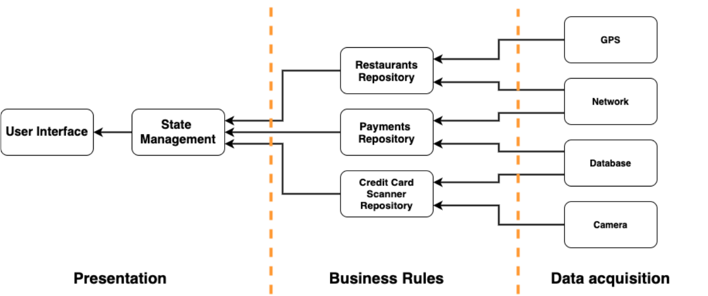 - Super declarative, crystal clear, zero-surprises APIs. - Separated data acquisition, business rules and ui. "My ideal of program design is to represent the concepts of the application domain directly in code. That way, if you understand the application domain, you understand the code and vice versa." - [Bjarne Stroustrup](https://www.stroustrup.com/quotes.html)
#### [Object oriented programming 101]() - Classes define domain models. - Interfaces allow several implementations. - Business logic calls interfaces methods. - Repositories implement interfaces. - Repository interface uses domain models. - Repositories are injected to business logic. "The object-oriented version of 'Spaghetti code' is, of course, 'Lasagna code'. (Too many layers)." – Roberto Waltman
#### [flutter docs: architecture](https://docs.flutter.dev/app-architecture/guide) 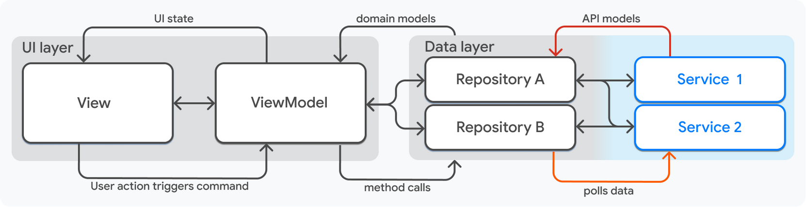 - Layers are separated by responsibility. - Domain models are shared between highest layers. - Api models are shared between lowest layers. - Layers depend on layers below them. “In modular programming, each module provides an abstraction in form of its interface.” - John Ousterhout
#### [UI = f(state)](https://docs.flutter.dev/development/data-and-backend/state-mgmt/declarative) - Builder function creates view from state. - Builder runs when application state changes. - When user interacts with view it may emit events. - Events may change application state. “Simplicity and straightforwardness proceed from conceptual integrity.” ― Fred Brooks
#### [Functional Reactive Programming (FRP)](https://quickbirdstudios.com/blog/what-is-functional-reactive-programming-frp/) <img alt="flutter state mgmt" src="images/functional-reactive-programming.png" width="50%"> - events and state changes are uni-directional flows. - business logic is executed as event is received. - business logic may emit state changes. - ui is rendered as reaction to received state change. “Overall, the best way to reduce bugs is to make software simpler.” - John Ousterhout
#### [Ai Summary: Imperative vs. Reactive](https://www.linkedin.com/pulse/imperative-vs-reactive-programming-tomas-mikula/) 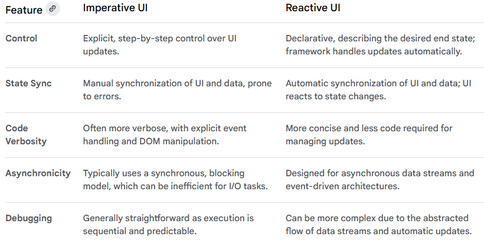 Imperative = full control, Reactive = simple clean UI.
#### [State management](https://docs.flutter.dev/development/data-and-backend/state-mgmt/intro) <img alt="state management" src="images/state-management-explainer.gif" width="80%"> Use [state management](https://docs.flutter.dev/development/data-and-backend/state-mgmt/intro) when you need to share application state between screens, across your app
#### [Types of State]() Ephemeral / UI / Local - associated with a particular widget - possibly contained within a single widget - no state management techniques needed App State - preserved throughout user sessions - distributed across different portions of program - may be applied globally
#### [React/Redux uses one-way data flow](https://redux.js.org/tutorials/essentials/part-1-overview-concepts) <img alt="flutter state mgmt" src="images/one-way-data-flow.png" width="40%"> - State is condition of the app at a point in time - View is rendered based on current state - View can initiate actions - Actions update state when needed - View re-renders based on the updated state
#### [Bloc = Business Logic Components](https://bloclibrary.dev/#/) <img alt="bloc arch" src="images/widget-bloc-communication.png" width="60%"> Each Bloc has one input (sink, add method) and output ([stream](https://dart.dev/tutorials/language/streams)). Bloc emits (output) states and handles (input) several types of events. App state is distributed across multiple custom blocs.
#### [Ai summary: Bloc vs. Redux](https://bloclibrary.dev/faqs/#bloc-vs-redux) 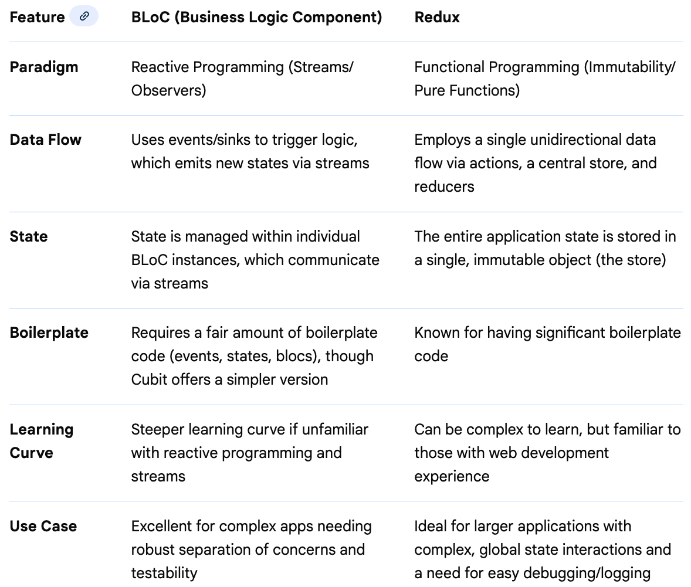
#### [Bloc library/pattern](https://bloclibrary.dev/#/architecture) <img alt="bloc architecture" src="images/bloc_architecture_full_white.png" width="60%"> Bloc attempts to make state changes predictable by regulating when a state change can occur and enforcing a single way to change state throughout an entire application. Ui and Data layer share domain model, but do not interact directly.
#### [Flutter docs: Data layer](https://bloclibrary.dev/#/architecture) 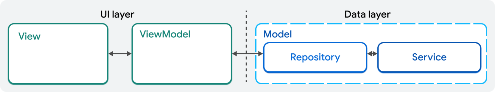 - MVVM's Model maps to Data layer. - Model consists of repositories and services. - Repository uses services to access data sources. “The most fundamental problem in computer science is problem decomposition: how to take a complex problem and divide it up into pieces that can be solved independently.” - John Ousterhout
#### [App is composition](https://fueled.com/blog/build-feature-set/) - user facing features (views, view-models) - flows between features (navigation) - information architecture (repositories, models) - integrations to other systems (services, apis) - security mechanisms, etc.. “If a system has a clean and obvious design, then it will need less documentation. The need for extensive documentation is often a red flag that the design isn’t quite right.” - John Ousterhout
#### [Flutter docs: every feature](https://docs.flutter.dev/app-architecture/guide#mvvm) 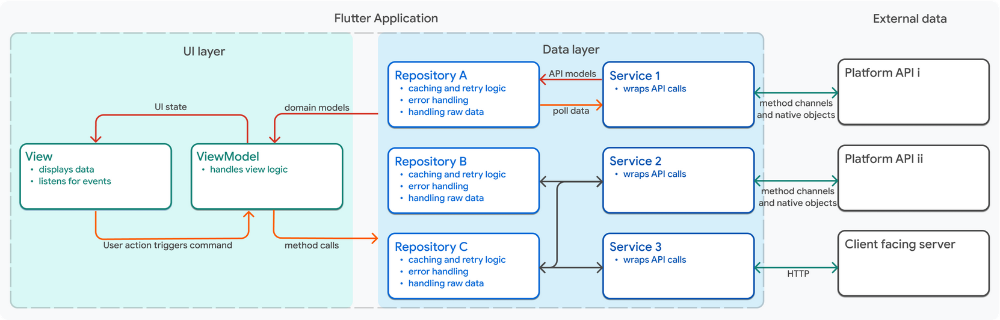 - contain one view for the UI - has one view model to handle logic - uses one or more repositories for application data - uses zero or more services for external APIs
#### [Bloc-to-bloc communication / layers](https://bloclibrary.dev/architecture/#bloc-to-bloc-communication) 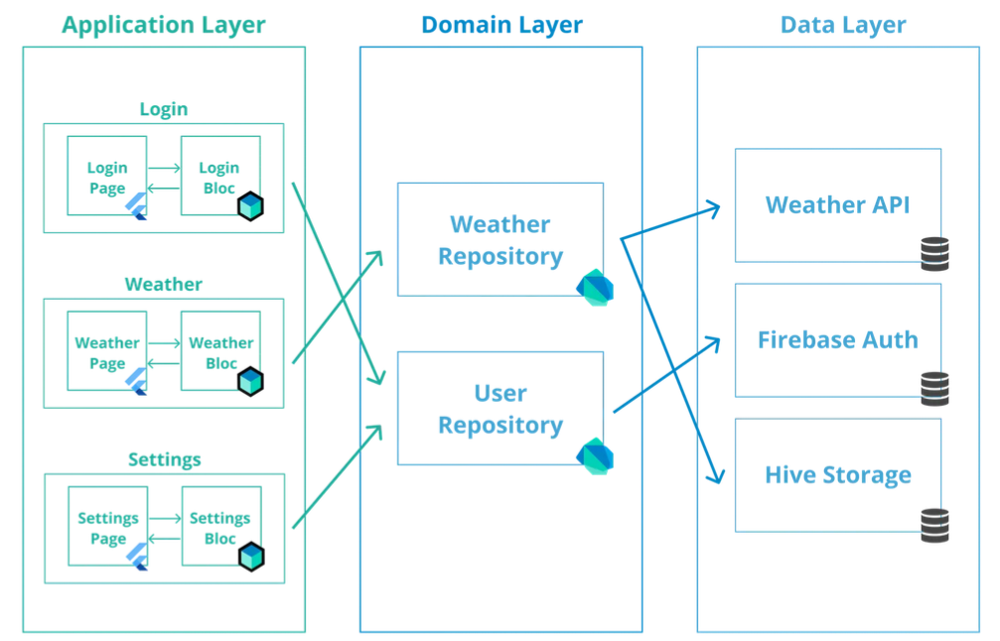 Blocs don't know each other. App may coordinate usage of blocs at presentation layer. Multiple blocks may also use same repositories to share data.
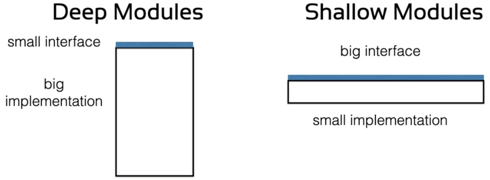 “If a module hides a lot of information, that tends to increase the amount of functionality provided by the module while also reducing its interface. This makes the module deeper. Conversely, if a module doesn’t hide much information, then either it doesn’t have much functionality, or it has a complex interface; either way, the module is shallow.” ― John Ousterhout
#### [Uniform and healthy code]() - Dart analyzer provides static analysis rules - DCM (Dart Code Metrics) provides additional rules - All code should be autoformatted with dart format - CI checks dependency definitions and licenses - CI scans dependencies for security vulnerabilities “In an obvious system, a developer can quickly understand how the existing code works and what is required to make a change. An obvious system is one where a developer can make a quick guess about what to do, without thinking very hard, and yet be confident that the guess is correct.” - John Ousterhout
### [Bloc rules, 1/3 (2018)](https://youtu.be/PLHln7wHgPE?t=1377) 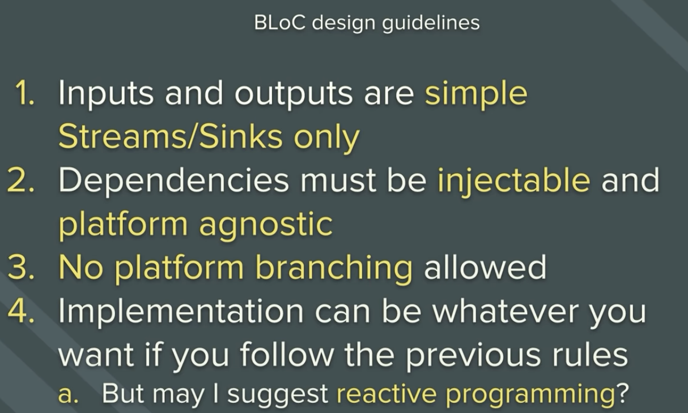 bloc has simple api, injected dependencies, is platform independent, reactive programming recommended.
### [Bloc rules, 2/3 (2018)](https://youtu.be/PLHln7wHgPE?t=1377) 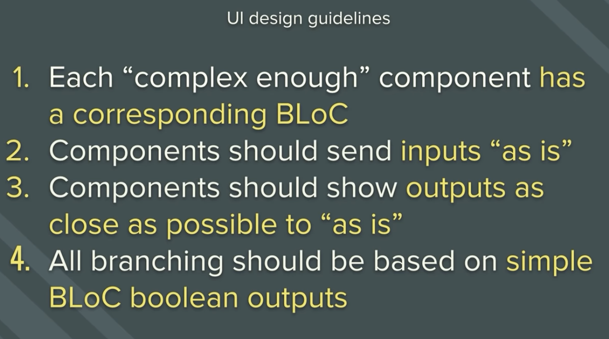 features map to bloc (1:1), input (event) and output (state) defined by bloc, states are unambiguous.
### [Bloc rules, 3/3 (2018)](https://youtu.be/PLHln7wHgPE?t=1377) <img alt="tldr design guidelines" src="images/tldr_design_guidelines.png" width="50%"> bloc = logic, ui = interaction. Simple & Separated. 1:1. No exceptions! ".. for the sanity of everyone."
### [Relaxation to rules]() in feature-driven architecture - [each feature has one Bloc](https://marcossevilla.dev/cleaner-flutter-vol-10#heading-predictability) assigned to it. - few global blocs may share state between features. blocs still don't know each other
### [Reactive Flutter Bloc, 1/1 (2018)](https://www.youtube.com/watch?v=RS36gBEp8OI) <img alt="reactive bloc principle" src="images/reactive_bloc_principle.png" width="70%"> Bloc is saved at widget tree. Any widget under bloc at widget tree can interact with bloc and send events. Builder methods build part of widget tree when new state is emitted.
#### [Most important classes]() Creation - BlocProvider creates bloc Business Logic - Bloc is base class for custom blocs State change operations - BlocBuilder builds widget tree - BlocListener runs functions
#### [Additional classes]() Creation - MultiBlocProvider to create multiple blocs Business Logic - BlocBase is base class for Bloc and Cubit - Cubit is like Bloc, but has methods instead of events State change operations - BlocSelector selects part of state - BlocConsumer combines builder and listener
### Patterns/idioms [Page-View](https://marcossevilla.dev/cleaner-flutter-vol-10#heading-page-view-pattern) - Page: creates bloc provider and wraps view - View: composes ui - Value: enables isolated view testing [Page-Switcher-View](https://medium.com/flutter-espa%C3%B1a/page-switcher-view-pattern-d045408f872c) - Switcher: selects active view - Value: encapsulates branching logic
## Imaginary example flow [Pictures taken from article of Timothy Stepro](https://timothystepro.medium.com/visualizing-flutter-bloc-399d79701f3a)
#### [Creating bloc](https://gist.github.com/felangel/fc8230776591f0297e6a1d1b5ef46a6c) <img alt="bloc provider" src="images/widget-tree-1-bloc-provider.png" width="40%"> Bloc provider widget creates bloc eagerly or lazily. Widgets in enclosed context can find and use bloc.
#### [User interacts with bloc](https://gist.github.com/felangel/fc8230776591f0297e6a1d1b5ef46a6c) <img alt="bloc events" src="images/widget-tree-2-bloc-events.png" width="40%"> Widgets send events to bloc. Example: "LoginRequested" with username and password.
#### [Receiving events from apis](https://gist.github.com/felangel/fc8230776591f0297e6a1d1b5ef46a6c) <img alt="bloc events" src="images/widget-tree-3-api-results.png" width="50%"> Event is created based on received data. Example: successful login as "CredentialsAccepted".
#### [Building ui](https://gist.github.com/felangel/fc8230776591f0297e6a1d1b5ef46a6c) <img alt="bloc events" src="images/widget-tree-4-bloc-builder.png" width="45%"> Ui is built when bloc emits new state. Example: "AuthenticationSuccess" with user information.
#### [Building needed part of tree](https://gist.github.com/felangel/fc8230776591f0297e6a1d1b5ef46a6c) <img alt="bloc events" src="images/widget-tree-5-bloc-builder-success-failure-states.png" width="70%"> State object type or content of state object (eg. status enum or other information) influences how UI is built. Example: Success and Failure trees are different.
<img alt="bloc events" src="images/widget-tree-6-bloc-summary.png" width="60%"> Summary of example: Bloc is created in initial state. Ui is built. Event with required information is sent. Api is called and as result additional event is created. Event handler emits state. State is used to rebuild ui.
## Example application [Code taken from bloc library's counter app example](https://bloclibrary.dev/tutorials/flutter-counter/)
#### [Counter app overview](https://gist.github.com/felangel/fc8230776591f0297e6a1d1b5ef46a6c) <img alt="counter bloc app" src="images/counter_bloc_example_ui.png" width="80%"> "+" adds increment event to sink, counter is rendered when state is received from stream. [BlocProvider](https://pub.dev/documentation/flutter_bloc/latest/flutter_bloc/BlocProvider-class.html) controls bloc lifecycle, [BlocBuilder](https://pub.dev/documentation/flutter_bloc/latest/flutter_bloc/BlocBuilder-class.html) builds view.
#### [CounterApp builds app root](https://gist.github.com/felangel/fc8230776591f0297e6a1d1b5ef46a6c) ``` class CounterApp extends StatelessWidget { @override Widget build(BuildContext context) { return MaterialApp( home: BlocProvider( /// DI: always same bloc instance create: (_) => CounterBloc(), child: CounterPage(), ), );}} void main() => runApp(CounterApp()); // Creation of app ``` [BlocProvider](https://pub.dev/documentation/flutter_bloc/latest/flutter_bloc/BlocProvider-class.html) takes care of creating single instance of [Bloc](https://pub.dev/documentation/bloc/latest/bloc/Bloc-class.html), lazily by default. Usage of [BlocProvider](https://pub.dev/documentation/flutter_bloc/latest/flutter_bloc/BlocProvider-class.html) loosely relates to Dependency Injection as concept.
#### [CounterPage build ui](https://gist.github.com/felangel/fc8230776591f0297e6a1d1b5ef46a6c) ``` class CounterPage extends StatelessWidget { @override Widget build(BuildContext context) { return Scaffold( appBar: AppBar(title: const Text('Bloc Counter')), body: Center( child: BlocBuilder<CounterBloc, int>( builder: (context, count) { return Text('$count', style: Theme.of(context).textTheme.headline1); },), ), floatingActionButton: FloatingActionButton( child: const Icon(Icons.add), onPressed:()=>context.read<CounterBloc>().add(Increment()), ),);}} ``` [BlocBuilder](https://pub.dev/documentation/flutter_bloc/latest/flutter_bloc/BlocBuilder-class.html) builds UI. Context.read < CounterBloc > acquires bloc. [add](https://pub.dev/documentation/bloc/latest/bloc/Bloc/add.html) method sends events.
#### CounterPageTest tests ui ``` void main() { testWidgets('Counter++ test', (WidgetTester tester) async { // build counter app and trigger first frame await tester.pumpWidget(CounterApp()); expect(find.text('0'), findsOneWidget); expect(find.text('1'), findsNothing); await tester.tap(find.byIcon(Icons.add)); // tap '+' await tester.pump(); // trigger next frame expect(find.text('0'), findsNothing); expect(find.text('1'), findsOneWidget); });} ``` [widget testing](https://docs.flutter.dev/cookbook/testing/widget/introduction) allows initiating actions and testing visible changes frame by frame.
#### [CounterBloc holds state](https://gist.github.com/felangel/fc8230776591f0297e6a1d1b5ef46a6c) ``` /// Base event and Increment Event abstract class CounterEvent {} class Increment extends CounterEvent {} /// handles converting `CounterEvent`s into `int`s. class CounterBloc extends Bloc<CounterEvent, int> { /// The initial state of the `CounterBloc` is 0. CounterBloc() : super(0) { /// When `Increment` event is added, /// current `state` is accessed via the `state` property /// and a new state is emitted via `emit`. on<Increment>((event, emit) => emit(state + 1)); } } ``` Blocs super constructor sets initial state to '0'. [on < event > () registers event handler.](https://verygood.ventures/blog/how-to-use-bloc-with-streams-and-concurrency) *Increment* event handler is lambda, which emits new state.
#### [CounterBlocTest tests bloc](https://gist.github.com/felangel/fc8230776591f0297e6a1d1b5ef46a6c) ``` void main() { group('CounterBloc', () { test('initial state is 0', () { expect(CounterBloc().state, 0); }); blocTest<CounterBloc, int>( 'emits [1] when increment is called', build: CounterBloc.new, act: (bloc) => bloc.add(Increment()), expect: () => [1], ); });} ``` [bloc_test](https://pub.dev/packages/bloc_test) allows testing reactive code in isolation. Example: create bloc, send events, check expected state. Mocking, setup, delays, etc. are supported.
## Modeling immutable data Models, events, states, dto's, json, .. Most of data can be immutable
### Why immutability? “Immutable objects are simple. They can only be in one state, which is carefully controlled by the constructor. One of the most difficult elements of program design is reasoning about the possible states of complex objects. Reasoning about the state of immutable objects, on the other hand, is trivial." ― Brian Goetz, Java Concurrency in Practice
### Immutable value types in dart Dart does not have value types, but you can write your own data classes. - define a constructor + the properties - override toString, operator ==, hashCode - implement a copyWith method to clone the object - implement handling of json de/serialization It's possible, but tedious and error prone.
### [Freezed: motivation](https://pub.dev/packages/freezed#motivation) <img alt="freezed motivation" src="images/freezed_motivation.png" width="80%"> Missing language level value types is a problem, but generating code from annotations is a powerful fix.
### [Model: User](https://codewithandrea.com/articles/parse-json-dart-codegen-freezed/) ``` @freezed abstract class User with _$User { const factory User({ required String id, required String username, required String password, }) = _User; // json serialization factory User.fromJson(Map<String, dynamic> json) => _$UserFromJson(json); } ``` [@freezed](https://pub.dev/packages/freezed) annotation makes [Build runner](https://pub.dev/packages/build_runner) to generate _$User mixin, _User constructor and _$UserFromJson method for [json handling](https://pub.dev/packages/json_serializable). Generated code is saved to repository, as generation takes some time.
### [Events: authentication](https://bloclibrary.dev/naming-conventions/#event-conventions) ``` @freezed abstract class AuthenticationEvent with _$AuthenticationEvent { const factory AuthenticationEvent.loginRequested( String username, String password, ) = Login; const factory AuthenticationEvent.logoutRequested() = Logout; } ``` Bloc has handlers for both Login and Logout events. Login has required parameters, which are passed to bloc. Event names should be in past tense, ie. LoginRequested, LogoutRequested.
#### [State change diagram / mermaid.js](https://www.mermaidflow.app/editor) <img alt="authentication states" src="images/authentication_state_diagram.png" width="30%"> ``` stateDiagram-v2 [*] --> Unauthenticated Unauthenticated --> Authenticated: login requested Authenticated --> Unauthenticated: logout requested Unauthenticated --> [*] Authenticated --> [*] ``` Events are operations that trigger state changes
### [State: Class per State style](https://bloclibrary.dev/modeling-state/#sealed-class-and-subclasses) ``` @freezed abstract class AuthenticationState with _$AuthenticationState { const factory AuthenticationState.authenticated(User user) = Authenticated; const factory AuthenticationState.unauthenticated() = Unauthenticated; } ``` Bloc creates state. Bloc listeners and bloc builders react on state change. Each state has own class. State contains only needed attributes. Type safe, easy to use, but can become verbose and complex.
### [State: Single class style](https://bloclibrary.dev/modeling-state/#concrete-class-and-status-enum) ``` enum GameStatus { initial, playing, success, failure } @freezed abstract class GameState with _$GameState { const factory GameState({ @Default(GameStatus.initial) status, @Default(5) int boardSize, @Default({}) Set<int> selectedElements, @Default([]) List<String> gameElements, }) = _GameState; factory GameState.fromJson(Map<String, Object?> json) => _$GameStateFromJson(json); } ``` User interface tracks status field of state class. Easy to model. Not type safe. Results easily bloated class with conflicting attributes. Example: error information is useful only in failure state.
#### [State modeling / usecases](https://www.youtube.com/watch?v=JVRPIittNaE) <img alt="single state" src="images/event-bloc-state-1.png" width="29%"> 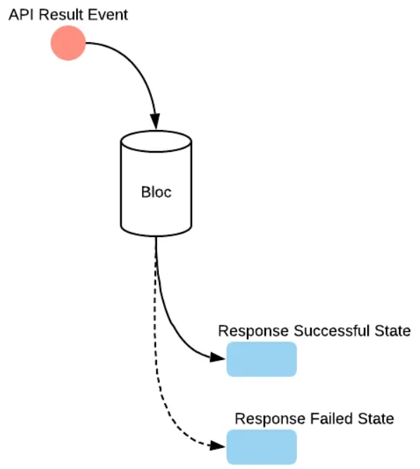 State modeling style depends on use case. One should use both styles in same app where appropriate.
## Rules for structure Architecture is only a set of agreements
#### [Architecture](https://www.youtube.com/watch?v=JVRPIittNaE) <img alt="app architecture" src="images/cost_of_app_architecture.png" width="80%"> App with architectural rules and constraints is easier to evolve than one without clear structure. When domain is complex feature and layer based division creates repeatable simple idioms.
#### [Dependency / data flow direction](https://github.com/devonfw-forge/devon4flutter-non-bloc-arch/wiki/220-BLoC) <img alt="bloc as part of arch" src="images/flutter-bloc-architecture-layers.png" width="45%"> Example: Repository/domain layer contains interfaces and models, which are implemented at data layer.
#### [Example of organizing principles](https://verygood.ventures/blog/very-good-flutter-architecture) app as composition of features - app contains navigation, dependency injection, .. packages for features, domain and data - features match to functional requirements - found from software design and named clearly - features contain views and blocs - domain layer consists of repositories and models - repositories transform raw data to domain model - data layer consists of reusable clients
#### [Recipe to identify packages](https://www.informit.com/articles/article.aspx?p=2995357&seqNum=2) use [Volatility-based decomposition](https://www.informit.com/articles/article.aspx?p=2995357&seqNum=2) - identify and encapsulates [areas of potential change](https://ckoster22.medium.com/architecting-for-change-b12824b35ea3). - model behavior as interaction between found areas. - name areas as features, repositories and apis. - create with [vgv cli](https://cli.vgv.dev/) packages for found components. - define [pubspec](https://dart.dev/tools/pub/pubspec) dependencies between packages. - fill packages with implementation components. - start with repository interfaces, models and blocs. - or add pages and views first if you feel. - let [melos](https://melos.invertase.dev/commands/list#--mermaid) generate dependency graph for packages. - let [lakos](https://pub.dev/packages/lakos) generate dependency graph for classes.
### [Modularity: principles]() - Code is on monorepo - Monorepo may contain multiple apps - Each app has set of features - Features are on their own modules - Modules export their public classes - Modules are is kept in sync using task runner - [Melos](https://melos.invertase.dev) runs same script in each module
### [Structure: monorepo](https://melos.invertase.dev/getting-started) ``` my_project ├── apps │ ├── apps_1 │ └── apps_2 ├── packages │ ├── package_1 │ └── package_2 ├── pubspec.yaml └── README.md ``` All code is on single repository. Apps are under */apps* directory. App is composition of features. Each feature has own package under */packages*.
### [Structure: app](https://melos.invertase.dev/getting-started) ``` app ├── lib │ ├── app │ │ ├── config │ │ └── view │ │ └── app.dart │ ├── app_bloc_observer.dart (log bloc activity, only dev) │ ├── bootstrap.dart │ ├── main_development.dart (enty point, dev) │ ├── main_production.dart (enty point, prod) │ └── main_staging.dart (enty point, staging) ├── pubspec.yaml ├── test └── windows (embedder / target) ``` Dev, Prod and Staging entry points bootstrap app.dart with right configuration. Config directory contains navigation routes and other configuration.
### [Structure: feature](https://melos.invertase.dev/getting-started) ``` features ├── authentication . ├── lib . │ ├── authentication.dart (public api) │ └── src │ ├── bloc │ ├── view │ └── .. └── test ├── bloc ├── view └── .. ``` Features public api is directly under lib. lib/src includes private implementation of feature. Blocs and views are implemented and tested separately.
### [Structure: repository](https://melos.invertase.dev/getting-started) ``` repositories ├ audit_trail_repository │ ├── lib . │ └── audit_trail_repository.dart (public api) . │ └── src . │ ├── model │ │ └── audit_trail_record.dart │ └── repository │ ├── audit_trail_repository.dart │ └── local_audit_trail_repository.dart └── test └── src └── repository └── audit_trail_repository_test.dart ``` Repository is part of domain, has public api, interface and implementation, and defines own model.
## Result: Safer programming Programs are safer if we prevent hardcoded dependencies, shared mutable state, side effects, nulls and mixed responsibilities and instead use dependency injection, immutable objects, pure functions, null safety and single responsibility principle.
#### Simple over Complex Recap - harden code using strong typing - shorten feedback loops using small tests - use one-way flows to help reason code - only support immutable data at ui - render changes same way as initial values - use simple components - write code only when absolutely necessary - organize code to minimize ripple effect - use uniform programming model in whole app
### ' Closing quote “Programming is about managing complexity: the complexity of the problem, laid upon the complexity of the machine. Because of this complexity, most of our programming projects fail.” ― [Bruce Eckel](https://www.goodreads.com/quotes/9875145-programming-is-about-managing-complexity-the-complexity-of-the-problem)
#### History / Presentations - [React: rethinking best practices, 10/2013](https://www.youtube.com/watch?v=x7cQ3mrcKaYx) - [Flux: Rethinking Web App Development, 5/2014](https://www.youtube.com/watch?v=nYkdrAPrdcw&list=PLb0IAmt7-GS188xDYE-u1ShQmFFGbrk0v) - [Open the Sky, 23.10.2014](https://github.com/flutter/flutter/commit/00882d626a478a3ce391b736234a768b762c853a) - [Sky Demo, 4/2015](https://www.youtube.com/watch?v=PnIWl33YMwA) - [The Mahogany Staircase - (..) Layered Design, 3/2016](https://www.youtube.com/watch?v=dkyY9WCGMi0) - [Flutter's Rendering Pipeline, 5/2016](https://www.youtube.com/watch?v=UUfXWzp0-DU) - [Flutter: Dart Developer Summit 2016, 10/2016](https://www.youtube.com/watch?v=Mx-AllVZ1VY) - [Flutter: (..) UI framework for tomorrow (..), 9/2017](https://www.youtube.com/watch?v=VUiVkDpikDI) - [Flutter: The Best Way to Build for Mobile?, 10/2017](https://www.youtube.com/watch?v=1BXg4wfB9pA) - [Early Success Story, 2018](https://medium.com/kinandcartacreated/flutter-the-skys-the-limit-84887c8f650d)
## More - [State of Flutter & Dart](https://redmonk.com/jgovernor/2022/05/16/flutter-propels-dart-frameworks-language-adoption-and-cross-platform-development/) - [Flutter & Ubuntu](https://ubuntu.com/blog/flutter-and-ubuntu-so-far) - [Awesome Flutter](https://github.com/Solido/awesome-flutter) - [Riverpod and Bloc comparison](https://otakoyi.software/blog/riverpod-and-bloc-packages-comparison) - [Crossing the chasm](https://www.hightechstrategies.com/crossing-the-chasm-summary/)
## Examples - [wisgen, 2019, no null safety used](https://github.com/Fasust/wisgen) - [i/o Pinball, 2022](https://verygood.ventures/success-stories/i-o-pinball) - [ranch game, 2022](https://verygood.ventures/blog/very-good-ranch-game)
#### ["Architecture is about the important stuff. Whatever that is." - Ralph Johnson](https://martinfowler.com/architecture/) - Within the Flutter community, [State Management](https://docs.flutter.dev/development/data-and-backend/state-mgmt/intro) and [Architecture](https://martinfowler.com/architecture/) are often used synonymously - [Any architecture for a Flutter application](https://github.com/devonfw-forge/devon4flutter-non-bloc-arch/wiki/200-Architecting-a-Flutter-App#state-management-vs-architecture) will have [some sort of State Management](https://docs.flutter.dev/development/data-and-backend/state-mgmt/options) - [State Management](https://docs.flutter.dev/development/data-and-backend/state-mgmt/intro) is not an [architecture by itself](https://bloclibrary.dev/#/architecture), even if [bloc library](https://bloclibrary.dev/) documentation contains [architecture proposition]((https://bloclibrary.dev/#/architecture)). - Compare: [Redux](https://redux.js.org/), Reacts state management solution
## Why Flutter - Flutter UI is [reactive](https://docs.flutter.dev/resources/inside-flutter) and [declarative](https://docs.flutter.dev/get-started/flutter-for/declarative) - [UI's are composed](https://docs.flutter.dev/development/ui/layout) - [widgets](https://docs.flutter.dev/development/ui/widgets-intro) everywhere! - Dart is [typed](https://dart.dev/guides/language/type-system), [null safe](https://dart.dev/null-safety), [top 20](https://redmonk.com/sogrady/2022/10/20/language-rankings-6-22/) language - Dart enables [hot reload](https://docs.flutter.dev/development/tools/hot-reload), [JIT](https://dart.dev/tools/dart-compile) and [AOT](https://dart.dev/tools/dart-compile) - Usage of [native / foreign code](https://docs.flutter.dev/development/platform-integration/platform-channels) is supported - Architecture != State Management, you need both - [Bloc](https://bloclibrary.dev/#/) is popular [state management option](https://docs.flutter.dev/development/data-and-backend/state-mgmt/options) - Bloc works as [VM](https://developer.android.com/topic/libraries/architecture/viewmodel) at [Model-View-ViewModel](https://en.wikipedia.org/wiki/Model%E2%80%93view%E2%80%93viewmodel) - Bloc requires knowledge of reactive programming.
| Feature| Imperative UI| Reactive UI| |-------:|-------------:|-----------:| | Control | Explicit, step-by-step control over UI updates. | Declarative, describing the desired end state; framework handles updates automatically. | | State Sync | Manual synchronization of UI and data, prone to errors. | Automatic synchronization of UI and data; UI reacts to state changes. | | Code Verbosity | Often more verbose, with explicit event handling and UI manipulation. | More concise and less code required for managing updates. | | Asynchronicity | Typically uses a synchronous, blocking model, which can be inefficient for I/O tasks. | Designed for asynchronous data streams and event-driven architectures. | | Debugging | Generally straightforward as execution is sequential and predictable. | Can be more complex due to the abstracted flow of data streams and automatic updates. |
#### Always code for the current understanding “I'm never in favor of writing code poorly, but I am in favor of writing code to reflect your current understanding of a problem (..) so that when it does come time to refactor, it's clear what you were thinking when you wrote it, making it easier to refactor it into what your current thinking is now" - Ward Cunningham